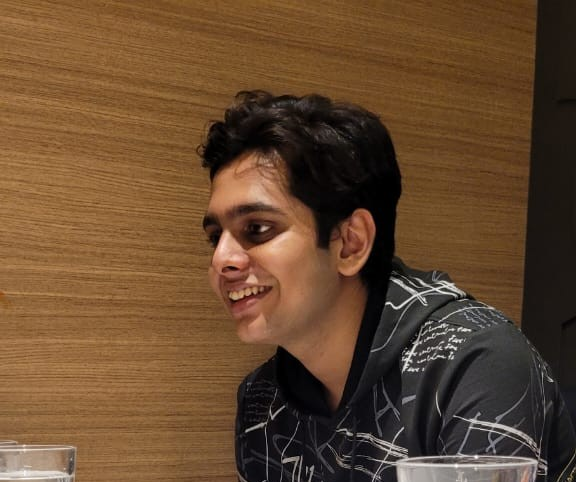

Hi, I'm Naman Agarwal
AI/ML Enthusiast | Aspiring Software Developer
I build intelligent systems using AI and scalable web applications. Currently working on real-world projects in AI, cloud, and software systems.

About Me
I am a Computer Science Engineering student with a strong foundation in software development, artificial intelligence, and data-driven systems. I enjoy building scalable applications, solving real-world problems using machine learning, and working on technically challenging projects through hackathons, research initiatives, and academic work.
Projects
AI-Driven Cloud Drug Management System
Designed and proposed a Scalable cloud architecture for drug inventory & supply chain management using AWS services. Integrated data-driven insights and analytics, along with AI-based demand forecasting concepts to optimize pharmaceutical supply chains. Focused on building a real-world solution for efficient drug distribution and inventory optimization.
Explainable AI-Based Supply Chain Prediction
1st Place · Intelligent Agents Track
Developed a machine learning model using Random Forest to predict late delivery risks and order profitability in supply chains. Achieved 72.4% accuracy and 0.998 R². Applied SHAP (Explainable AI) to interpret model decisions and provide actionable business insights.
All-Sky Camera System
Raspberry Pi
Developed an automated all-sky monitoring system using Raspberry Pi 5 and ZWO ASI camera for continuous night sky observation. Designed image acquisition and processing pipelines for capturing and analyzing sky data, with applications in astronomy and environmental monitoring.
Education
MIT World Peace University, Pune
B.Tech – Computer Science & Engineering
SVP Junior College of Science, Mumbai
HSC (MSBSHSC)
Swami Vivekanand International School, Mumbai
ICSE
Skills
Programming
Web & Cloud
AI / Data
Tools
Awards & Achievements
- 🥈 Runners-up — HackMIT-WPU’25 (AWS Re’forge)
- 🥈 Runners-up — HackMIT-WPU’25 (COSMOTRON)
- 🥇 1st Place — Intra-Department Project Competition
Contact
Email: ncgagarwal@gmail.com
Phone: +91 93215 75673
Location: Mumbai, India